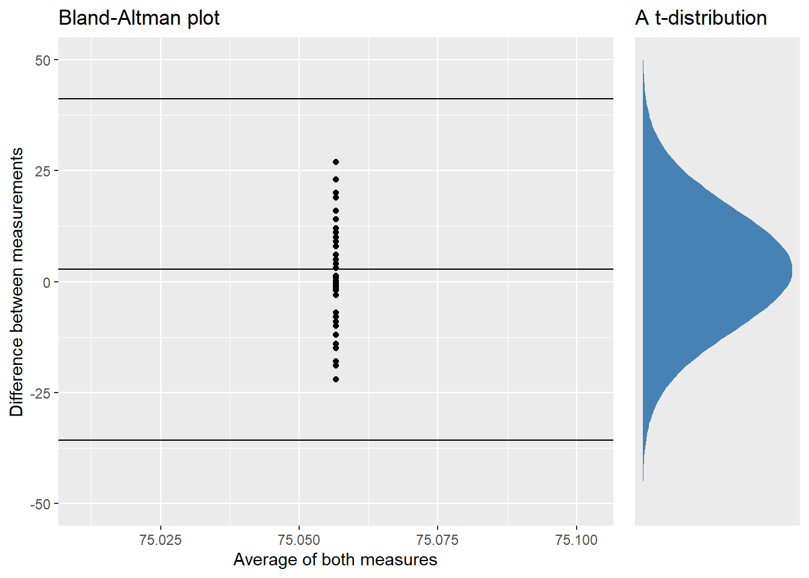

| Protocol | Peak Torque (N/m) | Time To Peak Torque (seconds) | ||||||
|---|---|---|---|---|---|---|---|---|
| Mean | Min | Max | SD | Mean | Min | Max | SD | |
| 60 (deg/s) | 196.6 | 136.0 | 228.0 | 32.9 | 0.61 | 0.44 | 0.70 | 0.08 |
| 120 (deg/s) | 166.5 | 111.0 | 197.0 | 30.7 | 0.42 | 0.29 | 0.70 | 0.10 |
| 240 (deg/s) | 111.8 | 69.0 | 140.0 | 23.5 | 0.25 | 0.22 | 0.30 | 0.02 |
| 360 (deg/s) | 85.4 | 58.0 | 114.0 | 17.1 | 0.31 | 0.17 | 1.04 | 0.28 |
| 480 (deg/s) | 62.8 | 41.0 | 83.0 | 14.8 | 0.23 | 0.18 | 0.56 | 0.12 |
| Isometric (60 deg) | 254.6 | 171.0 | 336.0 | 60.6 | 2.04 | 1.01 | 4.03 | 0.92 |
Reliability of knee-extension tests
Testprotokoll
Deltakeren starter med 7 min oppvarming på sykkel med 4 minutter på BORG -, 2 min på BORG - og 1 min BORG-. Testen gjøres unilateralt og starter med høgre ben. Deltakeren utfører isokinetisk kneeksentsjon på hastighetene, 60, 120, 240, 360 og 480 grader/sek og avslutter med en isometrisk ekstensjon på en vinkel på 60 grader. Deltakeren har tre førsok på isokinetiske tester og to forsøk på isometrisk hvor den beste gjennomføringen blir gjeldende. Etter gjennomføring blir testen gjentatt på venstre bein.
Standardisering
Før test
Deltakere skal ha tilnærmet likt kosthold, søvn og aktivitetsnivå 24 timer før test. Det skal ikke inntas koffein eller nikotin på testdag. Setet blir stilt inn før første test og de samme innstillingene blir brukt på andre test. Deltaker skal sitte inntil ryggstøtten og med plass til to fingre mellom mellom knehasen og setet på stolen. Rotasjonsaksen i kneleddet skal være parallelt til dreieaksen i dynamometeret. Motstandsarmen blir festet på testbenet ovenfor malleolus. På testbenet blir låret festet med belte og et belte over magen for å forhindre uønskede bevegelser.
Under test
Deltaker får muntlig tilbakemeldinger under gjennomføring.
| Protocol | Peak Torque (N/m) | Time To Peak Torque (seconds) | ||||||
|---|---|---|---|---|---|---|---|---|
| M | TE | CV | LoA | M | TE | CV | LoA | |
| 60 (deg/s) | 199.4 | 7.5 | 3.8 | 29.5 | 0.61 | 0.06 | 9.63 | 0.23 |
| 120 (deg/s) | 165.5 | 9.1 | 5.5 | 35.7 | 0.41 | 0.11 | 26.12 | 0.42 |
| 240 (deg/s) | 114.2 | 7.6 | 6.7 | 29.8 | 0.27 | 0.06 | 23.38 | 0.25 |
| 360 (deg/s) | 87.3 | 6.8 | 7.8 | 26.8 | 0.25 | 0.21 | 82.71 | 0.81 |
| 480 (deg/s) | 64.0 | 4.9 | 7.7 | 19.4 | 0.22 | 0.02 | 8.96 | 0.08 |
| Isometric (60 deg) | 263.9 | 28.7 | 10.9 | 112.8 | 2.05 | 0.71 | 34.76 | 2.80 |
| Abbriviations: M, mean; TE, typical error; CV, coefficient of variations; LoA, limits of agreement | ||||||||
